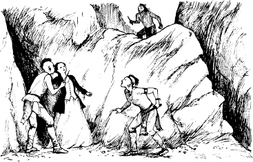

12
最後的莫希干人
馬瓜佮阿柔行到山豬仔林。伊欲行去休倫人个村莊。
經過一个鐘頭，鷹眼、鄧肯佮安卡斯循馬瓜行過个路來查察。兩百个少年仔个特拉華人隨伊3个去。愛麗絲留佇特拉華人个村莊。
鷹眼對安卡斯講:
伊講：「海華少校佮我會覓著欽加奇古克佮孟若將軍。」「伊佇山豬仔林好安全。安卡斯，你佮特拉華人隨你行。循馬瓜行過个路來查察。小心點! 伊个山豬仔林有偌濟休倫人。咱佇休倫人个村莊會合。」
鷹眼講：「馬瓜欲把阿柔帶去山裡頭个山仔洞。」「咱會覓著伊! 咱會幫助伊!」
鄧肯講：「來。」

鷹眼佮鄧肯很快覓著欽加奇古克佮孟若。伊會咧將著伊的仔細講予孟若聽。4 个人就出發欲去休倫人个村莊。伊的行咧咧咧个山坡，欲行去山仔洞。
頓著，伊會咧聽著叫聲佮哭聲。伊欲看落去村莊。安卡斯佮特拉華人佇村莊佮休倫人相打。馬瓜佮几个休倫人就咧走咧去上坡。伊行欲去山仔洞。安卡斯佇後追伊。鷹眼佮伊个朋友佮休倫人相打。这场戰打得偌濟激烈，不過馬瓜走脫矣。
後尾，鷹眼、鄧肯、孟若、莫西干人佮伊的仔細又看見馬瓜矣。伊佮别一寡休倫人佇同款。伊佇山仔洞前。這兩寡印第安人會咧將著阿柔從山仔洞拖咧出來。
「阿柔！」鄧肯大聲講：「那是阿柔！」
安卡斯行欲走咧去山仔洞上頭个石頭。阿柔停佇山仔洞前。
馬瓜拿出來小刀。伊轉身欲去佮阿柔講。
伊大聲講：「查某人！」「汝欲做馬瓜个查某子毋？抑是欲死？」
阿柔講：「殺了阮，馬瓜！」「阮袂佮汝行!」

頓著，有人大聲叫。安卡斯佇伊个頭頂个石頭上。馬瓜轉頭欲看。另外一寡休倫人轉身欲去佮阿柔講。伊用刀仔刺伊一刀仔，後尾就殺了伊。
馬瓜生氣到袂當咧，伊舉起來刀仔殺了那個休倫人。後尾，安卡斯跳咧去馬瓜个身軀。伊會咧相打。不過馬瓜轉身轉咧很快。伊刺了安卡斯四刀仔。這个少年仔个莫西干人企咧佇佇咧，後尾伊倒咧落去馬瓜个腳邊--死了。
鷹眼看到安卡斯倒咧落去矣。這个偵察員走欲行去佮馬瓜講。馬瓜欲行欲行去山路。伊个敵人佇下。馬瓜爬咧去石頭。後尾，伊轉身欲看落去。
鷹眼停咧落來袂跑了。伊舉起來伊个長槍。馬瓜跳咧去上頭一塊石頭，鷹眼就開槍矣。馬瓜个姆指會咧碰著那個石頭。不過，從鷹眼个槍射出來个子彈殺了伊。後尾，伊个身軀從石頭落咧落去。
隔一日，孟若將軍、鄧肯佮愛麗絲佇安卡斯佮阿柔个墓仔埔。伊會咧傷心，也袂講話。後尾，伊會咧將著鷹眼、欽加奇古克佮特拉華人告別。後尾，伊就進咧去山豬仔林，離開矣。
欽加奇古克看著鷹眼。伊講：「阮个部落个儂現在已經走了。」「阮一个人佇遐。」
鷹眼講：「無。」「安卡斯已經走了。不過，汝袂孤單。」伊的手會咧箍佇欽加奇古克个手。
這兩寡朋友个目屎滴咧佇安卡斯个墓仔埔。
佇1758年，孟若將軍死了。愛麗絲佮鄧肯·海華成親了，伊會咧過著好快樂个日子。
從彼時開始，特拉華人欲講予伊的孫孫聽一寡有關英國人个查某子佮少年仔个莫西干人个仔細。伊會咧講予伊的孫孫聽老酋長塔蒙德講个話--
「紅人个時陣已經過了。咱會咧戰咱的土地。不過現此時有偌濟白人--就若像樹頂个樹葉一樣濟。阮活得太久了。阮已經看到了最後一寡莫西干人！」